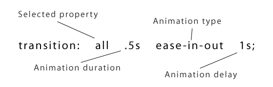
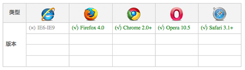

CSS3 transition:
W3C标准中对 css3的 transition这是样描述的：“css的 transition允许css的属性值在一定的时间区间内平滑地过渡。这种效果可以在鼠标单击、获得焦点、被点击或对元素任何改变中触发，并圆滑地以动画效果改变CSS的属性值。”
语法：
transition ： [<'transition-property'> || <'transition-duration'>
|| <'transition-timing-function'> || <'transition-delay'> [,
[<'transition-property'> || <'transition-duration'> || <'transition-timing-function'>
|| <'transition-delay'>]]*
transition主要包含四个属性值：执行变换的属性：transition-property,变换延续的时间：transition-duration,在延续时间段，变换的速率变化transition-timing-function,变换延迟时间transition-delay。下面分别来看这四个属性值
一、transition-property:
语法
transition-property ： none | all | [ <IDENT> ] [ ',' <IDENT> ]*
transition-property是用来指定当元素其中一个属性改变时执行transition效果，其主要有以下几个值：none(没有属性改变)；all（所有属性改变）这个也是其默认值；indent（元素属性名）。当其值为none时，transition马上停止执行，当指定为all时，则元素产生任何属性值变化时都将执行transition效果，ident是可以指定元素的某一个属性值。其对应的类型如下：
1、color: 通过红、绿、蓝和透明度组件变换（每个数值处理）如：background-color,border-color,color,outline-color等css属性；
2、length: 真实的数字 如：word-spacing,width,vertical-align,top,right,bottom,left,padding,outline-width,margin,min-width,min-height,max-width,max-height,line-height,height,border-width,border-spacing,background-position等属性；
3、percentage:真实的数字 如：word-spacing,width,vertical-align,top,right,bottom,left,min-width,min-height,max-width,max-height,line-height,height,background-position等属性；
4、integer离散步骤（整个数字），在真实的数字空间，以及使用floor()转换为整数时发生 如：outline-offset,z-index等属性；
5、number真实的（浮点型）数值，如：zoom,opacity,font-weight,等属性；
6、transform list:详情请参阅：《 CSS3 Transform》
7、rectangle:通过x, y, width 和 height（转为数值）变换，如：crop
8、visibility: 离散步骤，在0到1数字范围之内，0表示“隐藏”，1表示完全“显示”,如：visibility
9、shadow: 作用于color, x, y 和 blur（模糊）属性,如：text-shadow
10、gradient: 通过每次停止时的位置和颜色进行变化。它们必须有相同的类型（放射状的或是线性的）和相同的停止数值以便执行动画,如：background-image
11、paint server (SVG): 只支持下面的情况：从gradient到gradient以及color到color，然后工作与上面类似
12、space-separated list of above:如果列表有相同的项目数值，则列表每一项按照上面的规则进行变化，否则无变化
13、a shorthand property: 如果缩写的所有部分都可以实现动画，则会像所有单个属性变化一样变化
具体什么css属性可以实现transition效果，在W3C官网中列出了所有可以实现transition效果的CSS属性值以及值的类型，大家可以点 这里了解详情。这里需要提醒一点是，并不是什么属性改变都为触发transition动作效果，比如页面的自适应宽度，当浏览器改变宽度时，并不会触发transition的效果。但上述表格所示的属性类型改变都会触发一个transition动作效果。
二、transition-duration:
语法：
transition-duration ： <time> [, <time>]*
transition-duration是用来指定元素 转换过程的持续时间，取值：<time>为数值，单位为s（秒）,可以作用于所有元素，包括:before和:after伪元素。其默认值是0，也就是变换时是即时的。
三、transition-timing-function:
语法：
transition-timing-function ： ease | linear | ease-in | ease-out | ease-in-out
| cubic-bezier(<number>, <number>, <number>, <number>)
[, ease | linear | ease-in | ease-out | ease-in-out | cubic-bezier(<number>,
<number>, <number>, <number>)]*
取值：
transition-timing-function的值允许你根据时间的推进去改变属性值的变换速率，transition-timing-function有6个可能值：
1、ease：（逐渐变慢）默认值，ease函数等同于贝塞尔曲线(0.25, 0.1, 0.25, 1.0).
2、linear：（匀速），linear 函数等同于贝塞尔曲线(0.0, 0.0, 1.0, 1.0).
3、ease-in：(加速)，ease-in 函数等同于贝塞尔曲线(0.42, 0, 1.0, 1.0).
4、ease-out：（减速），ease-out 函数等同于贝塞尔曲线(0, 0, 0.58, 1.0).
5、ease-in-out：（加速然后减速），ease-in-out 函数等同于贝塞尔曲线(0.42, 0, 0.58, 1.0)
6、cubic-bezier：（该值允许你去自定义一个时间曲线）， 特定的 cubic-bezier曲线。 (x1, y1, x2, y2)四个值特定于曲线上点P1和点P2。所有值需在[0, 1]区域内，否则无效。
其是cubic-bezier为通过贝赛尔曲线来计算“转换”过程中的属性值，如下曲线所示，通过改变P1(x1, y1)和P2(x2, y2)的坐标可以改变整个过程的Output Percentage。初始默认值为default.

其他几个属性的示意图：

四、transition-delay:
语法：
transition-delay ： <time> [, <time>]*
transition-delay是用来指定一个动画开始执行的时间，也就是说当改变元素属性值后多长时间开始执行transition效果，其取值：<time>为数值，单位为s（秒），其使用和transition-duration极其相似，也可以作用于所有元素，包括:before和:after伪元素。 默认大小是"0"，也就是变换立即执行，没有延迟。
有时我们不只改变一个css效果的属性,而是想改变两个或者多个css属性的transition效果，那么我们只要把几个transition的声明串在一起，用逗号（“，”）隔开，然后各自可以有各自不同的延续时间和其时间的速率变换方式。但需要值得注意的一点：transition-delay与transition-duration的值都是时间，所以要区分它们在连写中的位置，一般浏览器会根据先后顺序决定，第一个可以解析为时间的怭值为transition-duration第二个为transition-delay。如：
a { -moz-transition: background 0.5s ease-in,color 0.3s ease-out; -webkit-transition:
background 0.5s ease-in,color 0.3s ease-out; -o-transition: background
0.5s ease-in,color 0.3s ease-out; transition: background 0.5s ease-in,color
0.3s ease-out; }
如果你想给元素执行所有transition效果的属性，那么我们还可以利用all属性值来操作，此时他们共享同样的延续时间以及速率变换方式，如：
a { -moz-transition: all 0.5s ease-in; -webkit-transition: all 0.5s ease-in;
-o-transition: all 0.5s ease-in; transition: all 0.5s ease-in; }
综合上述我们可以给 transition一个速记法：transition: <property> <duration> <animation type> <delay>如下图所示：

相对应的一个示例代码：
p { -webkit-transition: all .5s ease-in-out 1s; -o-transition: all .5s
ease-in-out 1s; -moz-transition: all .5s ease-in-out 1s; transition: all
.5s ease-in-out 1s; }
浏览器的兼容性:

因为transition最早是有由webkit内核浏览器提出来的，mozilla和opera都是最近版本才支持这个属性，而我们的大众型浏览器IE全家都是不支持，另外由于各大现代浏览器Firefox,Safari,Chrome,Opera都还不支持W3C的标准写法，所以在应用transition时我们有必要加上各自的前缀，最好在放上我们W3C的标准写法，这样标准的会覆盖前面的写法，只要浏览器支持我们的transition属性，那么这种效果就会自动加上去：
//Mozilla内核 -moz-transition ： [<'transition-property'> || <'transition-duration'>
|| <'transition-timing-function'> || <'transition-delay'> [,
[<'transition-property'> || <'transition-duration'> || <'transition-timing-function'>
|| <'transition-delay'>]]* //Webkit内核 -webkit-transition ： [<'transition-property'>
|| <'transition-duration'> || <'transition-timing-function'>
|| <'transition-delay'> [, [<'transition-property'> || <'transition-duration'>
|| <'transition-timing-function'> || <'transition-delay'>]]*
//Opera -o-transition ： [<'transition-property'> || <'transition-duration'>
|| <'transition-timing-function'> || <'transition-delay'> [,
[<'transition-property'> || <'transition-duration'> || <'transition-timing-function'>
|| <'transition-delay'>]]* //W3C 标准 transition ： [<'transition-property'>
|| <'transition-duration'> || <'transition-timing-function'>
|| <'transition-delay'> [, [<'transition-property'> || <'transition-duration'>
|| <'transition-timing-function'> || <'transition-delay'>]]*
Transition何时能够生效？
不是所有的情况下transition都能够生效的，下面列举了transition所生效的时机和属性(加粗的比较常用)
| CSS属性 | 改变的对象 |
| background-color | 色彩 |
| background-image | 只是渐变 |
| background-position | 百分比，长度 |
| border-bottom-color | 色彩 |
| border-bottom-width | 长度 |
| border-color | 色彩 |
| border-left-color | 色彩 |
| border-left-width | 长度 |
| border-right-color | 色彩 |
| border-right-width | 长度 |
| border-spacing | 长度 |
| border-top-color | 色彩 |
| border-top-width | 长度 |
| border-width | 长度 |
| bottom | 百分比，长度 |
| color | 色彩 |
| crop | 百分比 |
| font-size | 百分比，长度 |
| font-weight | 数字 |
| grid-* | 数量 |
| height | 百分比，长度 |
| left | 百分比，长度 |
| letter-spacing | 长度 |
| line-height | 百分比，长度，数字 |
| margin-bottom | 长度 |
| margin-left | 长度 |
| margin-right | 长度 |
| margin-top | 长度 |
| max-height | 百分比，长度 |
| max-width | 百分比，长度 |
| min-height | 百分比，长度 |
| min-width | 百分比，长度 |
| opacity | 数字 |
| outline-color | 色彩 |
| outline-offset | 整数 |
| outline-width | 长度 |
| padding-bottom | 长度 |
| padding-left | 长度 |
| padding-right | 长度 |
| padding-top | 长度 |
| right | 百分比，长度 |
| text-indent | 百分比，长度 |
| text-shadow | 阴影 |
| top | 百分比，长度 |
| vertical-align | 百分比，长度，关键词 |
| visibility | 可见性 |
| width | 百分比，长度 |
| word-spacing | 百分比，长度 |
| z-index | 正整数 |
| zoom | 数字 |